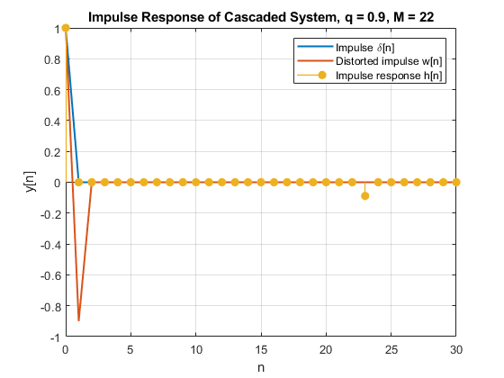
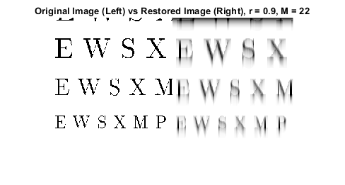
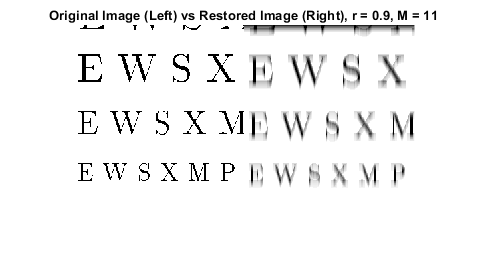

Contents
FIR Filters, Cascading Two Systems: Lab P-9 3.2
3.2.1 a
% Parameters q32 = 0.9; % Parameter for FIR Filter-1 r32 = 0.9; % Parameter for FIR Filter-2 M32 = 22; % Order of FIR Filter-2 L = 30; % Arbitrary plot length; % Define the filter coefficients for FIR Filter-1 b1 = -q32; % Filter-1 coefficients % Define the filter coefficients for FIR Filter-2 b2 = r32.^(0:M32); % Filter-2 coefficients % Impulse input xn = [1 zeros(1, L)]; xn_shifted = [0 xn(1:end-1)]; % Apply FIR Filter-1 using firfilt qxn_1 = firfilt(q32, xn_shifted); wn = xn - qxn_1; % Apply FIR Filter-2 using firfilt yn = firfilt(b2, wn); % Note that the deconvolution is imperfect. % Plot the impulse response of the overall cascaded system figure(1); plot((0:L), xn, 'LineWidth', 1.5, "DisplayName", "Coded"); % Input hold on plot((0:L), wn, 'LineWidth', 1.5, "DisplayName", "Coded"); % Distorted stem((0:L), yn(1:L+1), 'filled', 'LineWidth', 1.0); % Recovered xlabel('n'); ylabel('y[n]'); title(['Impulse Response of Cascaded System, q = ', num2str(r32), ', M = ', num2str(M32)]); legend("Impulse \delta[n]", "Distorted impulse w[n]", "Impulse response h[n]"); grid on; % 3.2.1 b % w[n] = x[n] - q*x[n-1] % M % y[n] = sum(r^l * w[n- l]) % l=0 % q = 0.9 % r = 0.9 % M = 22 % x[n] = delta[n] % x[n] = { 1, n == 0 % { 0, n != 0 % w[n] = [1, -0.9, 0, 0, 0,..., 0] % 22 % y[n] = sum(0.9^l * w[n-l]) % l = 0 % % y[n] = [1, 0, 0, ..., 0, -0.0886, 0, 0, ...] % y[23] = -0.0886 % This is the length of the filter, from l = 0 to M = 22.
3.2.2 a
Image Processing Load the image matrix from the file
load('echart.mat'); % 3.2.2. b % FIR Filter-1: distortion % % Apply FIR Filter-1 along the horizontal direction ech_distorted = zeros(size(echart)); for row = 1:size(echart, 1) distorted_row = firfilt(b1, echart(row, :)); ech_distorted(row, :) = distorted_row(1:length(echart(row, :))); end % Apply FIR Filter-1 along the vertical direction echo90 = zeros(size(ech_distorted)); for col = 1:size(ech_distorted, 2) distorted_col = firfilt(b1, ech_distorted(:, col)'); echo90(:, col) = distorted_col(1:length(ech_distorted(:, col)))'; end % 3.2.2 c % FIR Filter-2: recovery % % Apply FIR Filter-2 along the horizontal direction restored_image = zeros(size(echo90)); for row = 1:size(echo90, 1) restored_row = firfilt(b2, echo90(row, :)); restored_image(row, :) = restored_row(1:length(echo90(row, :))); end % Apply FIR Filter-2 along the vertical direction for col = 1:size(echo90, 2) restored_col = firfilt(b2, echo90(:, col)'); restored_image(:, col) = restored_col(1:length(echo90(:, col)))'; end % Display the original and restored images side-by-side figure(2); % restored_image = restored_image / 10; imshowpair(echart, restored_image, 'montage'); title(['Original Image (Left) vs Restored Image (Right), r = ', num2str(r32), ', M = ', num2str(M32)]); % ========================================== % Knowing that the impulse response shows a "ghost" at the length of the deconvolution sum (M+1) % we can predict that such "ghosts" will occur approximately this frequently in real-world signals. % With an original value x[23] = 0, the impulse response h[23] = -0.0886 indicates that the remaining % distortion is not necessarily significant in a one-off case, but definitely noticeable in repeated values. % The worst-case relative error is approximately 91.8% % ========================================== % Calculate the difference to find "ghosts" difference = abs(echart - round(restored_image ./ 10)); % Find the worst-case error worst_case_error = max(difference(:)); % Calculate the worst-case relative error as a percentage worst_case_relative_error = (worst_case_error / 255) * 100; fprintf('Worst-case relative error: %.2f%%\n', worst_case_relative_error);
Worst-case relative error: 91.76%
3.2.3
3.2.3 a
r323 = 0.9; M323 = 11; % Tried 11, 22, 33 % 11 Looks best because there is less distortion. % This is possibly due to there being fewer iterations from l:M when summing w[n - l], % meaning fewer distortions are "carried forward", resulting in fewer overall % remaining distortions in the recovered signal. b1_323 = -q32; % Filter-1 coefficients % Define the filter coefficients for FIR Filter-2 b2_323 = r323.^(0:M323); % Filter-2 coefficients % FIR Filter-1: distortion % % Apply FIR Filter-1 along the horizontal direction ech_distorted2 = zeros(size(echart)); for row = 1:size(echart, 1) distorted_row2 = firfilt(b1_323, echart(row, :)); ech_distorted2(row, :) = distorted_row2(1:length(echart(row, :))); end % Apply FIR Filter-1 along the vertical direction echo902 = zeros(size(ech_distorted2)); for col = 1:size(ech_distorted2, 2) distorted_co2l = firfilt(b1_323, ech_distorted2(:, col)'); echo902(:, col) = distorted_co2l(1:length(ech_distorted2(:, col)))'; end % 3.2.2 c % FIR Filter-2: recovery % % Apply FIR Filter-2 along the horizontal direction restored_image2 = zeros(size(echo902)); for row = 1:size(echo902, 1) restored_row2 = firfilt(b2_323, echo902(row, :)); restored_image2(row, :) = restored_row2(1:length(echo902(row, :))); end % Apply FIR Filter-2 along the vertical direction for col = 1:size(echo902, 2) restored_col2 = firfilt(b2_323, echo902(:, col)'); restored_image2(:, col) = restored_col2(1:length(echo902(:, col)))'; end % Display the original and restored images side-by-side figure(3); % restored_image = restored_image / 10; imshowpair(echart, restored_image2, 'montage'); title(['Original Image (Left) vs Restored Image (Right), r = ', num2str(r32), ', M = ', num2str(M323)]);